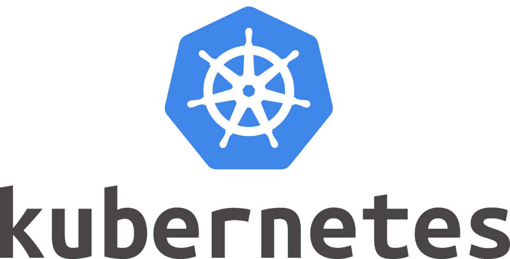

Skills




Position : Software Engineer From : Japan With over 4 years of experience as a backend engineer, I have honed my skills primarily in Java, while also gaining valuable experience in frontend development. My passion for coding drives me to write clean, readable, and testable code. I am dedicated to understanding requirements thoroughly and considering the ideal structure to design effective specifications. My goal is to deliver robust and efficient solutions that meet both the technical and business needs.
Financial web services.
Furniture subscription services.